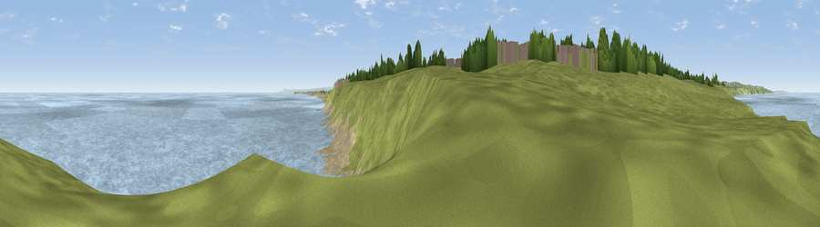

Viewpoint near Blackhall Rocks
#24779 in England · top 64% of its area beats it · near Blackhall RocksThe view, rendered

A 360° render of this exact spot computed from the terrain model, tree cover and land cover — summer colours, afternoon light, calibrated against photographs of famous viewpoints. Real trees, hedges and buildings will differ in detail.
The panorama
Grey silhouette: terrain skyline in each direction (720 bearings, Earth curvature and refraction included). Dashed green: skyline with trees (+15 m) and buildings (+8 m) as obstacles. Blue strip: how far the ground is visible on each bearing.
Where the view opens
Wedge length = distance to the farthest visible ground on that bearing (vegetation-aware). Rings at 10, 25 and 50 km.
What fills the view
84% water · 11% grassland · 4% bare ground
Angular shares of the visible panorama (visual magnitude), not map area. Landscape diversity 0.24 (0–1 Shannon).
Key numbers
More beautiful places nearby
The staircase of upgrades: each row has a higher view potential than everything closer. Driving times are estimates from straight-line distance, calibrated against real road routing — check an actual route before setting out.
| Place | Direction | Drive | Score |
|---|---|---|---|
| Viewpoint near Horden | NW · 3 km | ~7 min | 60.5 |
| Viewpoint near Horden | NW · 4 km | ~9 min | 64.0 |
| Viewpoint near Hesleden | SW · 5 km | ~11 min | 66.5 |
| Viewpoint near Elwick | SW · 6 km | ~13 min | 70.5 |
| Viewpoint near Easington Colliery | NNW · 7 km | ~15 min | 74.4 |
| Viewpoint near Houghton-le-Spring | NW · 15 km | ~27 min | 76.0 |
| Viewpoint near Lazenby | SSE · 23 km | ~37 min | 86.4 |
| Warsett Hill | SE · 28 km | ~44 min | 86.8 |
54.74275, -1.26697 · source: osm viewpoint · position refined by local search. Computed location — check access rights before visiting.